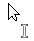
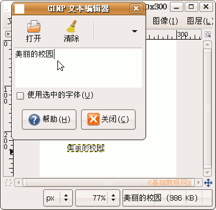
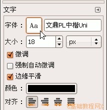
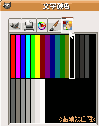
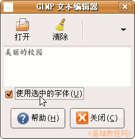
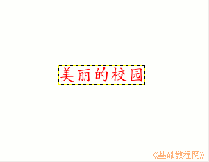

GIMP操作基础教程
作者：Teliute 来源：基础教程网
四、设置文字 返回目录
对于输入的文字，我们往往要给它进行一定的修饰，比如字体、字号、颜色等，下面我们来看一个练习；
1、启动GIMP
1）点上面板栏的菜单“应用程序－图像－GIMP图片编辑器”，就可以启动GIMP程序；
2）程序启动完成后，出来两个长条面板，如果还有一个“日积月累”面板，可以去掉下面的勾，点“关闭”；

最小化右边的“对话框”长条面板，等用到的时候再从下面的面板栏里点出来；
2、输入文字
1）在主面板点“文件”菜单，选择“新建”命令，出来一个新建对话框，
把中间的宽度和高度都改成300，单位是像素不变，大约是10厘米；


2）点“确定”后，出来一个图像窗口，里面是一张空白的画布，边上是一圈虚线边界；

3）在工具箱里选择字母A的“文字工具”，把鼠标移到画布里，鼠标指针后面拖了一个插入点竖线，表示可以输入文字了；

4）在画布中央点一下，出来一个小文本框面板，里面有个光标一闪一闪，文字先输入到这个里面；

5）调出中文输入法，在里面输入文字“美丽的校园”，这时工作区的画布上也有了文字，默认是黑色Sans字体，大小是18点(px)；

6）在主面板的下面找到文字选项，点击字体旁边的“Aa”按钮，在出来的列表中选择最下面的汉字“文鼎PL中楷Uni”；

7）再把下面的大小里设为24，点击下面的颜色长条，出来一个颜色面板，在上边选择“色板”标签，然后选择第一个红色；

选择颜色也可以在对话框长面板里，如果勾选文本框里的“使用选中字体”，可以在文本框里预览一下文字；

8）点“关闭”按钮，就可以看到画布上的文字效果了；

以“设置文字”为文件名，保存文件到自己的文件夹；
本节学习了GIMP中输入文字和保存文件的 基本方法，如果你成功地完成了练习，请继续学习下一课内容；本教程由86团学校TeliuTe制作|著作权所有，商业用途请与作者联系
基础教程网：http://www.laxjyj.com/teliute/
美丽的校园……
转载和引用本站内容，请保留版权信息和本站链接。